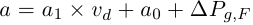

Material::Abbe class reference
[Core module]
Declaration
#include <Goptical/Material/Abbe>
namespace Goptical {
namespace Material {
template <enum AbbeFormula m> class Abbe;
};
};
This class is a member of the Material namespace.
Inheritance
Description
This class models optical properties of glass materials using known refractive index value, Abbe number and partial dispersion deviation (dpgF).
AbbeVd and AbbeVe template instances are available for d and e line definitions of Abbe number.
The following formula is used to determine refractive index at any wavelen in visible spectrum:
\frac{c_3+a\times c_2}{\lambda} + \frac{c_5+a\times c_4}{{\lambda}^{2}} +
\frac{c_7+a\times c_6}{{\lambda}^{3}} \right)" />
with  and  the micrometer wavelength.
the micrometer wavelength.
a0 and a1 values are given in Schott "TIE-29: Refractive Index and Dispersion" technical information document.
c0 to c7 values were determined using least square fitting on indexes obtained using Sellmeier data from 118 glass materials from the Schott catalog for 360 wavelengths between 390nm and 750nm. Two different coefficients sets are used for nd/vd and ne/ve pairs.
Mean error is less than 0.00002 from Sellmeier indexes and largest error found across fitted glasses and wavelengths is 0.0008. When dpgF is set to 0, mean error becomes 0.0001 and largest error is close to 0.006.
Members
See also the full member list section for this class.
Inherited members
- 36 members inherited from Dielectric
Functions
- Abbe(double n, double v, double dpgF = [...])
- virtual double get_measurement_index(double wavelen) const
Members detail
Create an abbe glass model
This virtual function implements the get_measurement_index pure function declared in the Dielectric base abstract class.
Documentation inherited from base class:
Get material relative refractive index in measurment medium at specified wavelen in nm.